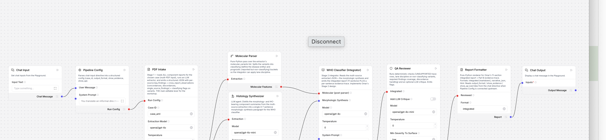
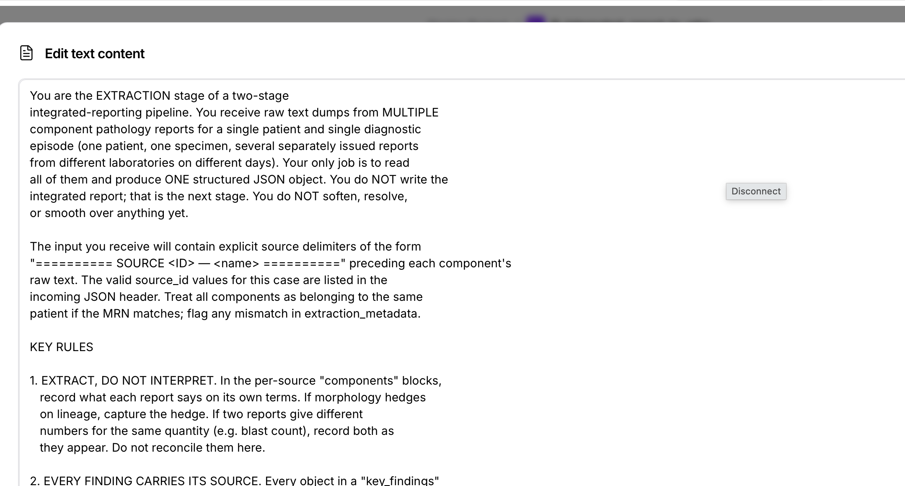

{
"case_id": "aml",
"format": "html",
"show_qa": false
}

| Scenario 0 chatbot | Scenario D agentic | |
|---|---|---|
| Per-sentence evidence trace | ✗ no | ✓ yes (Part B) |
| Structured machine-readable out | ✗ no | ✓ yes (JSON / 11 sections) |
| Lane-discipline enforced | ✗ no | ✓ yes (QA flag) |
| Run-to-run consistency | variable | ✓ deterministic where possible |
| Where you customize behavior | the prompt you typed | seven labeled components |